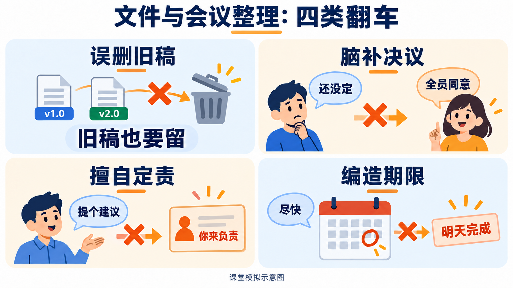
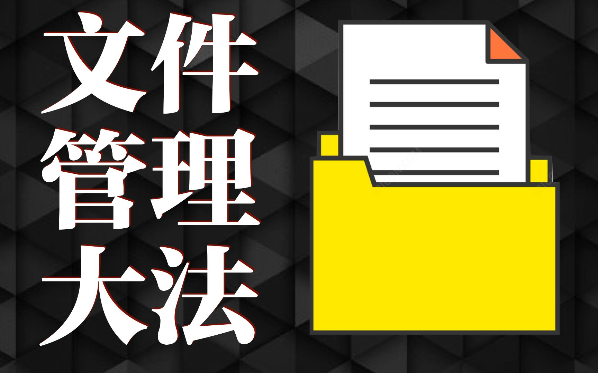
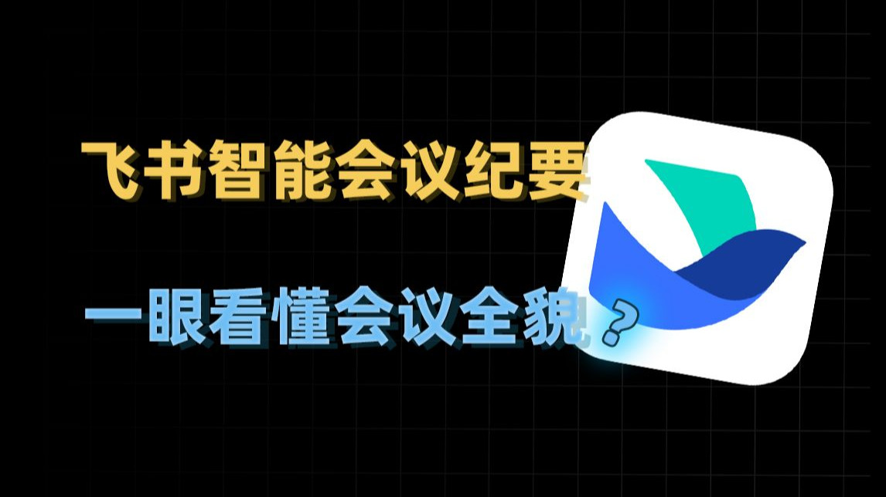
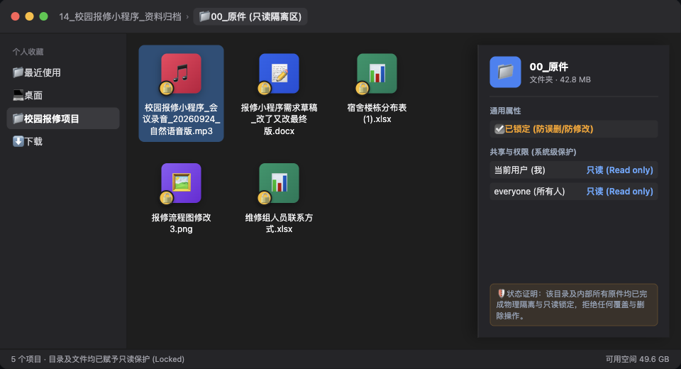
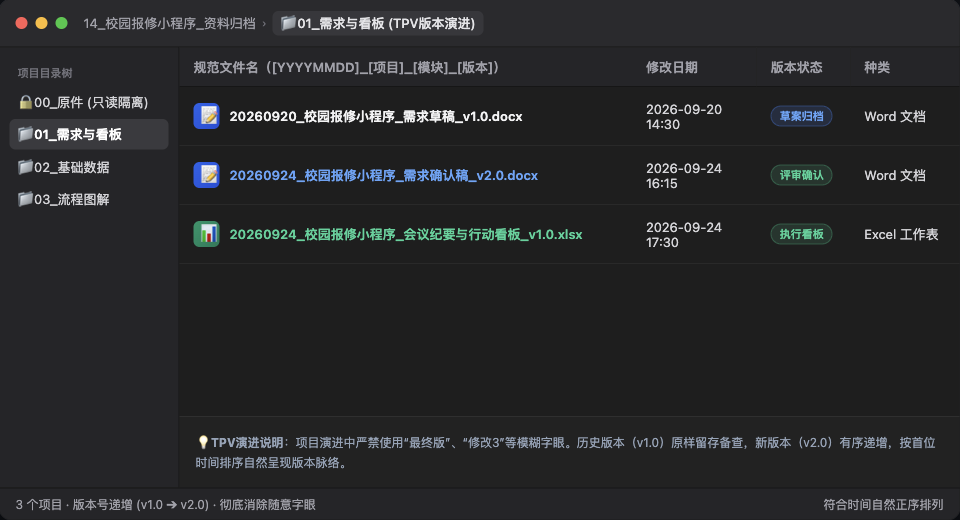
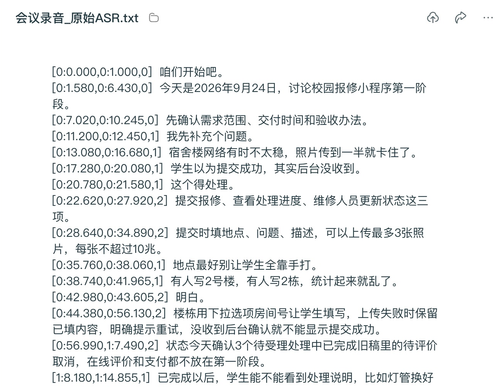
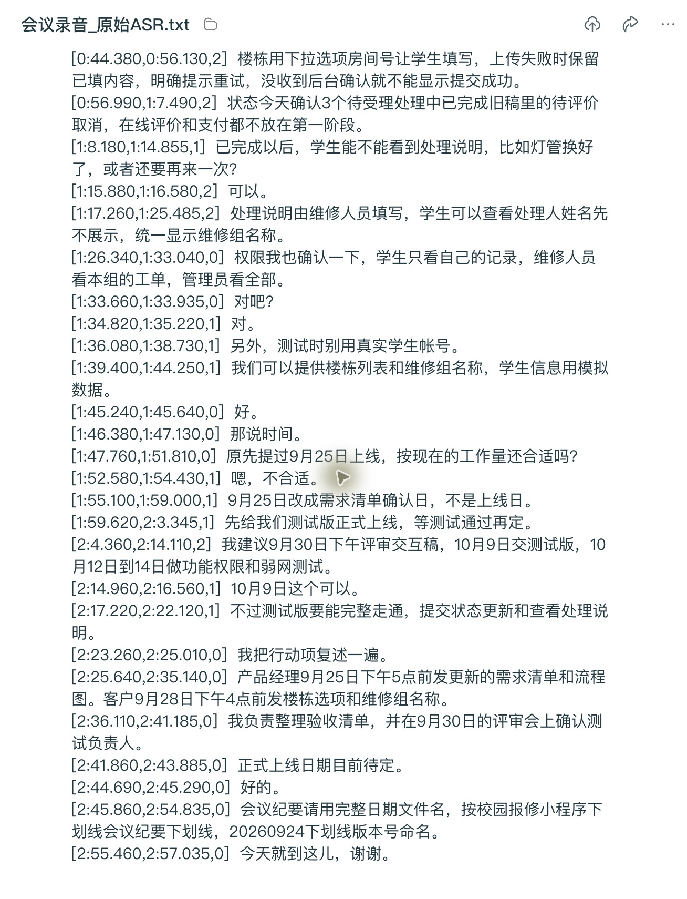

第三章｜AI 办公与数据处理 · 第 14 次课 · 2 学时
文件管理与会议记录
用AI整理文件索引，从会议音频中提取有依据的决议与行动项；原件与工作副本分开保存，未明确的信息不补造。
00 知识回顾
- 上节留存：用材料约束五页PPT内容，生成或在WPS中排入文本；保存后实际修改一个字，核对页数与放映可读性，不能仅凭对象边框判断是否可编辑。
- 本节攻坚：职场日常两项最高频基本功——文件 TPV 规范归档与会议录音速记提炼（FDA 模型），彻底消灭“最终版”与“废话散文纪要”。
01 任务预告
今天要完成什么？
- 最终作品：一份规范的项目文件归档索引、会议行动项看板与 AI 过程记录留痕（含分类规则、责任人、截止期、状态标记与纠偏记录）。
- 文件要求：一个可编辑Excel工作簿，包含原始摘录、会议纪要和行动看板。
- 合格标准（看这5条）：
- 包含
文件索引目录、会议行动看板与AI过程记录三个独立工作表； - 建立“日期-项目-分类-版本”（TPV）标准命名规范，彻底剔除“最终版”、“修改3”等随意字眼；
- 从会议速记中提炼行动项，每项必须明确【事项描述、责任人、完成期限、验收标准】；
- 遇到未敲定、发言模糊事项，严格标注“待定核实”，绝不主观推测或强行定责；
- 设立专门的
AI过程记录工作表完整留痕（Prompt、初始输出与人工纠偏说明），完成原件与工作副本分开保存，并用独立测试文件观察属性设置的实际效果，重新打开文件排版无损。
- 包含
避坑预警：借助 AI 整理时的 4 类典型翻车

| 典型翻车现象 | 产生原因分析 | 核心防御提示词 | 我们的正确操作 |
|---|---|---|---|
| ❌ 1. 脑补未决事项 | 口头探讨被 AI 当成正式决议 | “区分讨论观点与最终决议，未达成一致的仅列入待定议题。” |
核对会议结尾结论，未敲定者坚决不写进决议 |
| ❌ 2. 强行指派责任人 | 谁发言积极就把任务安在谁头上 | “责任人必须依原文明确指派；未指派的统一填‘待确认’，严禁推测。” |
责任人列出现模糊处标黄，线下交组织者确认 |
| ❌ 3. 编造截止时间 | 把“下周搞一下”脑补为具体几月几日 | “严格摘录原文时间节点；未指明确切日期的，一律标记‘待定’。” |
保留“尽快”、“下周”等原话，具体截止时间未明确时标待定，不自行补日期 |
| ❌ 4. 物理误删旧稿 | AI 认为相似文件无用，直接覆盖或删除 | “历史版本完整保留并按版本号归档，严禁直接覆盖或删除源文件。” |
建立 00_原件 保存原件，另建工作副本；只读勾选不能代替实际权限检查 |
02 基础概念
概念 1｜现代文件命名法则：TPV 规范体系
本课采用TPV命名约定（时间 Time - 项目 Project - 版本 Version），用日期、项目和版本帮助识别文件；这是一种课堂约定，不是所有单位统一采用的标准：
标准公式：[YYYYMMDD]_[项目名]_[模块分类]_[版本号].[扩展名]
❌ 错误命名：迎新晚会策划案_改了又改最终终稿(2).docx
✅ 规范命名：20260924_迎新晚会_策划方案_v2.0_送审版.docx
- T（Time，时间维度）：首位统一采用
YYYYMMDD（如20260924），确保在任何操作系统下按名称正序排列时，均能自动按真实时间线顺序呈现； - P（Project / Topic，项目与模块）：指明所属项目与具体业务模块（如
校园报修小程序_需求确认稿、迎新晚会_赞助名单）； - V（Version / Status，版本与状态）：采用规范数字版本号
v1.0、v2.0（小修补用v1.1，里程碑用v2.0），彻底消灭“最终版”、“最新版”、“修改稿”等无法回溯的混乱字眼。
概念 2｜会议纪要三层过滤模型：FDA
拒绝录音转写原文大段搬家，使用三层漏斗严格脱水过滤：
F 事实（Fact） ➔ 讨论了什么背景与现状（保留争议双方观点）
│
D 决议（Decision）➔ 领导当场定案了什么（未定案项一律归入待定库）
│
A 行动（Action） ➔ 散会后谁该干什么（责任人 + 截止时限 + 具象验收物）
在部门会议中，主管随口说：“这个展板主视觉颜色偏暗，小李你平时审美不错，可以多留心看看。”AI 提炼纪要写道：“【行动项】小李负责于明天完成展板重新设计并定稿。”这样归纳合理吗？为什么？
点击展开查看参考分析
极不合理！ 这是典型的“口语闲聊当工作指派”和“凭空捏造时限”：
- 性质混淆：主管仅是探讨审美，并未正式立项或指定小李负责；
- 凭空捏造：原文无“明天完成”和“重新设计”，纯属 AI 幻觉；
- 正确做法：写入讨论要点：“大家讨论展板色调偏暗，建议调整”；若需小李跟进，必须由主管明确指派后方可录入行动项。
概念 3｜基于 SMART 原则的课堂精简自检三要素
在管理学与目标制定中，常用的 SMART 原则（Specific 目标具体、Measurable 成果可衡量、Achievable 步骤切实可达成、Relevant 与项目强相关、Time-bound 有严格截止时限，详见权威 CDC 培训与目标设计指南）。
针对日常会议纪要与行动看板整理中最容易缺失、最容易产生推诿扯皮的三大痛点漏洞，本课提炼出面向实操的“极简三要素自检项”：
- 责任明确（对应 Specific）：按原文填写已明确的责任人或角色，例如“产品经理”；未指派的写“待确认”，不能为填满表格编造姓名；
- 交付可衡量验收（对应 Measurable）：必须有明确的交付物形态（如具体的表格、文档、清单、测试报告），拒绝“继续跟进”、“认真落实”等抽象空话；
- 截止有明确时限（对应 Time-bound）：必须精确到具体工作日或截止时间点，未敲定必须明确标注“待定”，严禁模糊写“尽快”、“下周前”。
03 核心案例
课堂模拟案例：AI纪要把讨论误写成决议
以下为课堂模拟情境，用来分析未核对会议材料可能造成的错误，不作为真实学校事故记录：
“项目助理将 1 小时的会议录音转写文本直接发给 AI 总结，未做人工核验与防脑补约束，便将生成的纪要发到项目协同群。结果引发跨部门严重异议：
- 把未决讨论当成正式决议：关于是否在第一阶段增加在线支付功能，后勤与研发激烈讨论未定，AI 竟总结为‘双方一致同意上线在线支付’；
- 擅自定责抓壮丁：会上后勤老师随口说‘小陈对各楼栋比较熟悉’，AI 竟在纪要里写‘【行动项】小陈周四前完成全校 32 栋宿舍现场摸排’；
- 凭空捏造交付时限：客户提到‘等测试版出来再定上线时间’，AI 却把发言中提到的‘9月25日确认需求’错判为‘9月25日系统正式上线’，险些导致重大交付事故。”
📺 精选实战视频推荐（能看视频，少看文字！）
以下视频用于补充观察文件整理与会议提炼的方法。外部页面的可访问性和界面可能变化，本课任务仍以下方材料和步骤为准：


📸 原件与工作副本的界面参考
看图理解两项文件整理方法，具体权限效果需按当前账号实际查看：

00_原件目录用于保存初始材料，其他目录用于工作副本。图中的目录和属性界面不能单独证明当前用户无法覆盖或删除文件。
YYYYMMDD_项目名_模块_版本号 清晰展示版本递增（v1.0 ➔ v2.0），保留完整历史版本，彻底告别“最终版”混乱。提示词武器：防脑补防御性会议提炼模板
复制以下提示词给 WorkBuddy 或通用大模型：
你是一名严谨的行政督办专家。请分析以下会议口语速记，输出结构化纪要表格，必须严格遵守以下红线：
1. 【议题与事实】按讨论主题归纳事实，如实保留各方分歧；
2. 【决议定案】仅记录形成明确共识的结论；未决事项放入“待跟进事项”，严禁写成决议；
3. 【行动项看板】表格输出：任务编号、核心事项、所属模块、责任人、截止时间、验收标准；
4. 【红线铁律】责任人必须在原文中有明确指派，未指派统一填“待确认”；截止时间未明确具体日期的统一填“待定”，严禁凭空臆造时间或指派人员！
💡 从认知到动手的过渡： 接下来在【04 实践任务】中使用《校园报修小程序》课堂练习材料，完成会议提炼、文件索引和原件另存。
04 实践任务｜以《校园报修小程序》为实战，制作文件索引与会议行动看板
课堂情境与练习材料
课堂情境：你担任后勤处数字化项目组助理，整理一场日期为2026年9月24日的“校园报修小程序（第一阶段）”评审会材料。 下载会议练习音频与教师参考材料。学生使用“学生音频”中的MP3，教师参考单独保留。本课使用会议练习音频；另有4个模拟旧文件名供索引规划，不表示这些旧文件已经发放。 你的任务是：从音频提取文字并核验，整理会议行动看板和文件索引，再把实际取得的原件与工作副本分开保存。
📌 实训素材获取途径： 本课使用会议练习音频（
校园报修小程序_会议录音_20260924_自然语音版.mp3），请先使用上方下载链接取得音频；使用原课程账号时也可从 【学习通 ➔ AIGC应用与实践 ➔ 资料】 取得，再通过AI转写并对照音频核验。第4步的4个旧文件名仅用于模拟索引规划，不要求复制不存在的文件。
🧭 动手前必读：为什么实训里会有两个提示词？到底怎么做？
很多同学可能会疑惑：“为什么步骤里突然出现两个提示词？我到底该怎么跟 AI 互动？” 其实，今天我们要帮项目组解决两个完全不同维度的实际痛点，分两轮AI处理和一次本地整理：
| 战役阶段 | 我们手头的痛点 | 我们派给 AI 的任务 | 对应的提示词武器 | 最终输出成果 |
|---|---|---|---|---|
| 【战役一·会议篇】 （步骤 1 ➔ 步骤 3） |
手里只有一段吵吵嚷嚷的会议录音，大段口语无法直接指派工作 | 让 AI 扮演行政督办专家，过滤口语废话，把讨论提炼为责任清晰的表格 | 【提示词 1】 防脑补会议提炼模板 |
输出 《会议行动看板》 （任务编号、责任人、截止时间、验收标准） |
| 【战役二·文件篇】 （步骤 4） |
有6项待规划资产清单，其中4个为模拟旧文件名，另有练习音频与最终工作簿，需要整理新旧名称映射 | 让 AI 切换身份，扮演数字资产管理专家，按 TPV 规范重命名并规划隔离目录 | 【提示词 2】 TPV 资产规范规划模板 |
输出 《文件索引目录》 （原文件名、TPV 新文件名、建议归档路径） |
| 【战役三·实操篇】 （步骤 5 ➔ 步骤 7） |
需要保存实训成果，并分开存放原件和工作副本 | 打开WPS保存工作簿，本地只整理实际取得文件；属性效果只在独立测试文件上观察 | 人工落盘操作 | 交付 资料归档与会议看板.xlsx（含3个工作表），建立原件与工作副本目录 |
协同工具分工
- AI 协同软件（WorkBuddy / 语音转写工具）：
- 语音转文字：将会议录音原件自动转写为初始速记文本；
- 智能提炼：针对核验后的速记，运用 FDA 模型防御性提取核心决议与行动看板；
- 资产规划：统一制定符合 TPV 规范的重命名方案与原件与工作副本分开的归档目录树。
- 专业软件（WPS 表格 / Excel）： 承接 AI 结构化输出结果，构建包含【文件索引目录】、【会议行动看板】与【AI过程记录】的完整实训工作簿，标黄待定项，完成交付落盘。
- 操作系统文件管理器（Windows 资源管理器 / macOS 访达）： 实际创建归档目录树；原件保留，修改只动副本，属性验证只用独立测试文件，不试删原始材料。
第 1 步｜下载练习音频，用 AI 语音转文字（提取速记草稿）
本课默认使用WorkBuddy的内置音频转写能力。先把MP3放入本次课堂工作文件夹，在WorkBuddy“新建任务”下方点“选择工作空间”，选择这个文件夹；若已在其他工作空间中，先切换到本课文件夹。保持录音原件不变。
发送下面的请求，工具应读取这个MP3并调用语音识别，而不是根据文件名编写会议内容：
请只读取本次工作空间中的“校园报修小程序_会议录音_20260924_自然语音版.mp3”，实际调用内置音频转写工具AudioTranscribe，生成“会议录音_原始ASR.txt”。
不读取任何已有逐字稿，不用文字材料替代音频；保留原始识别错误、时间戳与说话人编号，不先润色或提炼纪要。
完成后返回可打开的TXT，并说明实际调用工具及完成状态。若当前账号没有音频能力、文件不能读取或额度不足，请报告具体限制，不编写转写稿。
不安装新包、不购买服务、不改录音原件。
展开任务的执行过程，查看音频转写调用及完成状态；在产物区打开TXT，确认内容包含时间戳和说话人编号，再进入第2步回听核验。不要点击输入框旁的“语音输入”来代替文件转写；那是当前麦克风输入入口。

右侧TXT保留时间戳与说话人编号；0:56附近的三个状态缺少分隔标点，需要结合原音频校准。
账号没有音频转写能力时： 使用配套的教师逐字稿作为“文字提炼练习”材料，继续第2—3步；在AI过程记录中注明本次未完成音频转写。这个备用练习保留行动项提炼目标，不能当作自己已经跑过语音识别。
第 2 步｜对照音频核验，人工排查 3 个高危听录陷阱
AI 语音转写不可避免地存在同音词混淆、专有名词识别不准、说话人切分错误等缺陷。请对照音频原件，重点回听并校准以下 3 个关键高危陷阱：
- 陷阱 1（专有名词与功能状态）：
- 检查状态机：核对是否正确识别为“待受理、处理中、已完成”3 个状态；
- 检查否定句：核实是否将“旧稿里的待评价取消”、“在线评价和支付都不放在第一阶段”准确识别，防止漏词导致语义反转。
- 陷阱 2（时间反转高危陷阱）：
- 重点回听讨论交付时间的对话段落：客户明确表示“九月二十五日改成需求清单确认日，不是上线日。先给我们测试版，正式上线等测试通过再定”。
- 确保速记稿中绝不能将“9月25日”误记为“上线日”。
- 陷阱 3（责任人与时间节点）：
- 回听结尾项目经理的复述，校对产品经理（9月25日发需求清单）、客户（9月28日发楼栋与维修组）、项目经理（9月30日确认测试负责人）的对应关系。

1:55处写明“需求清单确认日，不是上线日”；1:59处缺少分句标点，不能连读成“测试版正式上线”。结合2:41处“正式上线日期目前待定”核对原意。
校准完成后，保存为一份干净可信的《校准版会议速记文本》。
第 3 步｜【战役一·会议篇】发【提示词 1】给 AI，生成《会议行动看板》
怎么做？按这4个动作操作：
- 复制提示词：点击下方代码框的【复制】按钮；
- 填入你的速记：在提示词中找到
[请在此处粘贴你在第2步中核验校准后的会议速记文本]，替换为你第 2 步校准好的文字； - 发送给 AI：发给 WorkBuddy（或大模型），AI 会自动按 FDA 模型吐出【核心决议】与【行动项看板】表格；
- 快速检查：核对 AI 有没有擅自脑补——“正式上线日期”必须写“待定”，责任人必须依原文明确填写！先留存该表格备用。
请分析以下我已人工核验校准的《校园报修小程序第一阶段评审会》会议速记，运用 FDA 模型提炼出结构化的【核心决议】与【行动项看板（Action Items）】表格。
【会议速记文本】：
[请在此处粘贴你在第2步中核验校准后的会议速记文本]
要求：
1. 提取【核心决议】：明确写出第一阶段确认的 3 个状态（待受理、处理中、已完成），以及明确剔除的功能（取消待评价、暂不开发在线评价与支付）；
2. 提取【行动项看板表格】：字段包含：任务编号、核心事项、所属模块、责任人、截止时间、验收标准；
3. 【高危陷阱防范铁律】：
- 原先提过的“9月25日上线”已被客户明确否定！9月25日仅为“需求清单确认日”；
- “正式上线日期”必须明确标注为“待定（测试通过后再定）”，严禁擅自捏造上线日期！
- 责任人必须依据会议复述明确填写（产品经理、客户后勤处、项目经理），严禁推测分配。
第 4 步｜【战役二·文件篇】发【提示词 2】给 AI，生成 6 项资产的《文件索引目录》
为什么换提示词？ 刚才第 3 步我们把会议内容搞定了，手里多了一份《会议纪要与看板》。 本次索引规划列6项：4个模拟旧文件名、实际下载的练习音频，以及承接会议看板的最终工作簿。模拟清单不等于实际存在文件，不创建空壳文件冒充旧稿。 我们需要让 AI 切换身份，从“行政记录员”变成**“数字资产管理专家”**，帮我们制定统一规范的重命名方案和目录树！
怎么做？极简 2 步操作：
- 直接复制提示词：点击下方代码框【复制】按钮（提示词内已经帮你把这 6 个文件的信息全部写全了，你无需修改任何内容！）；
- 直接发给 AI：在当前对话框（或新开对话）直接发送。AI 会自动根据 TPV 规则，输出一张结构规范的《文件索引目录》表格与目录树结构。
你是一名数字资产管理助手。请按本课“日期-项目-分类-版本”（TPV）约定，为下列课堂资产清单规划新名称与原件、工作副本分开的目录树。清单中1—4为模拟旧文件名，仅作索引规划。
待归档资产清单：
1. 报修小程序需求草稿_改了又改最终版.docx（创建于 2026年9月20日）
2. 宿舍楼栋分布表 (1).xlsx（创建于 2026年9月22日）
3. 报修流程图修改3.png（创建于 2026年9月23日）
4. 维修组人员联系方式.xlsx（创建于 2026年9月24日）
5. 校园报修小程序_会议录音_20260924_自然语音版.mp3（2026年9月24日会议练习音频）
6. 资料归档与会议看板.xlsx（第5步将保存的实训工作簿）
要求：
1. 统一采用 YYYYMMDD_项目名_具体模块_版本号.扩展名 标准格式；
2. 彻底消除“最终版”、“修改3”、“(1)”等混乱字眼，版本号从 v1.0 开始规范递增；
3. 设计归档目录树：设立“00_原件”存放实际取得的原件，另设工作副本目录；仅规划路径，不声称已创建文件或设置权限，不补造未发放的4个模拟旧文件；
4. 以表格形式输出《文件索引目录》：序号、原始文件名、TPV规范新文件名、所属模块、建议归档路径。
第 5 步｜成果落盘：在 WPS/Excel 中建立“三表合一”工作簿
很多同学会问：“我最终要交的文件到底长什么样？” 你最终只需要提交 1 个可编辑 Excel 文件，保留本课资料归档与会议看板的全部工作表。 在这个工作簿底部，建立 3 个独立工作表（Sheet），分别承接前面的成果：
📁 最终交付文件：资料归档与会议看板.xlsx
├── 📑 工作表 1【文件索引目录】 ➔ 粘贴来自第 4 步（提示词 2）的生成结果
├── 📑 工作表 2【会议行动看板】 ➔ 粘贴来自第 3 步（提示词 1）的生成结果（将“正式上线日期”行整行涂成浅黄色！）
└── 📑 工作表 3【AI过程记录】 ➔ 记录你在两轮对话中的核验纠偏事实（按下表格式填写）
工作表3【AI过程记录】填写参考：按实际输入与输出填写；未发现错误时写明核对依据，不照抄未发生的纠错。
| 环节编号 | 使用的 AI 工具 | 发送的关键提示词（Prompt）摘录 | AI 初始输出的潜在缺陷/高危陷阱 | 人工核验与纠偏操作说明 |
|---|---|---|---|---|
| 过程01（会议提炼） | 实际使用的转写工具/WorkBuddy | 提示词1及本人的校准文本 | 记录实际输出；检查是否把需求确认日误写成上线日 | 回听交付时间段落；若AI误写则修正，未误写则记录核对通过并说明依据 |
| 过程02（文件归档） | WorkBuddy或实际工具名 | 提示词2与模拟资产清单 | 对照原始名称检查命名与路径，有问题再记录 | 按TPV约定列出新旧名称映射；模拟旧文件只规划索引，实际材料另存原件与工作副本 |
第 6 步｜动手实操：保留原件、建立工作副本并观察属性
只在本课实训目录内操作，不整理桌面上的其他文件，不对原始音频试删。
- 新建实训目录树：建立
14_校园报修小程序_资料归档，其下设置00_原件/、01_需求与看板/、02_基础数据/、03_流程图解/和99_属性测试/。 - 原件与副本分开保存：把实际下载的练习音频复制到
00_原件/，另存工作副本后再处理；4个模拟旧文件只进入索引规划，不补造文件。第5步工作簿放入01_需求与看板/。 - 查看属性与当前账号权限：Windows文件夹的“只读”勾选不能当作目录防写、防删权限；macOS的
everyone权限也不等于当前所有者权限。先确认对象和当前账号的实际权限，不为本课修改系统目录或其他用户权限。 - 只用独立测试文件观察：在
99_属性测试/新建空白文本属性测试.txt，另存一份副本。Windows可在这个测试文件的“属性”中勾选“只读”；macOS可在这个测试文件的“显示简介”中勾选“已锁定”。尝试编辑并保存，记录能否保存、是否提示另存或受阻，不预设一定成功拦截。观察后取消测试文件属性即可；不要对00_原件中的音频按Delete或执行删除命令。
原件、副本和测试文件的用途必须分清。若测试文件仍可修改，如实记录设置与结果；不能据此声称原件已经获得可靠的防误删保护。
第 7 步｜文件重开检查与自检验收
关闭 WPS，重新双击打开导出的 资料归档与会议看板.xlsx：
- 确认
文件索引目录、会议行动看板、AI过程记录三张工作表均完整存在； - 确认正式上线日期行已标浅黄色底纹；
- 排版整洁无乱码截断，即可安心提交作业。
05 本课总结
成果自查卡
| 检查项 | 我做到了吗？ | 自检标准 |
|---|---|---|
| 语音提取与校准 | [ ] 是 | 音频已转写，并对照原话核对9月25日为需求确认日；是否发现错误如实记录 |
| FDA决议清晰 | [ ] 是 | 明确提炼 3 个确认状态，剔除待评价与在线支付等非本期功能 |
| SMART行动项要素全 | [ ] 是 | 责任按原文填写人或角色，交付可验收；未明确的责任与期限标待确认，不补造 |
| 关键待定留白与标黄 | [ ] 是 | 正式上线日期明确标注为“待定”，且表格中已完成浅黄色底纹警示 |
| TPV规范方案 | [ ] 是 | 彻底消除“最终版”等字眼，版本规范递增，目录规划清晰 |
| AI过程记录留痕 | [ ] 是 | 原有第3张工作表记录提示词、实际输出及核对结果；有错再写修改，未发现问题说明依据 |
| 原件保留与属性观察 | [ ] 是 | 原件与工作副本分开保存，属性测试只用独立测试文件，记录实际结果而非预设拦截 |
| 重开正常无误 | [ ] 是 | 重新打开后格式规整、字体清晰，工作表切换顺畅无损 |
下节预告： 下一节《知识库与业务协同：一条问题、一处依据》，把两份课堂模拟资料放进 ima，练习提问与打开出处，再用 WorkBuddy 整理一页讲座准备清单。